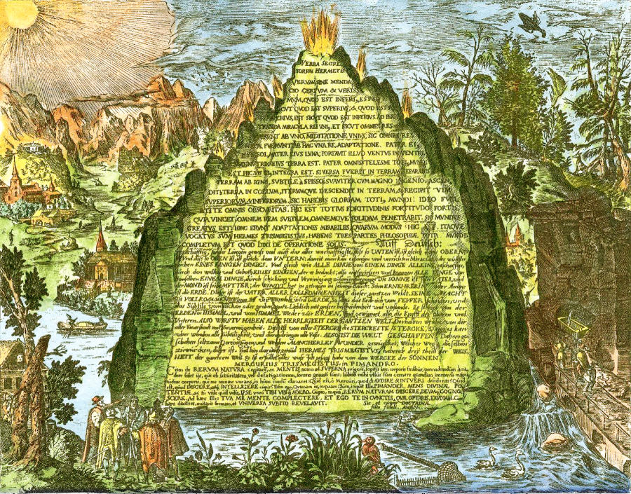
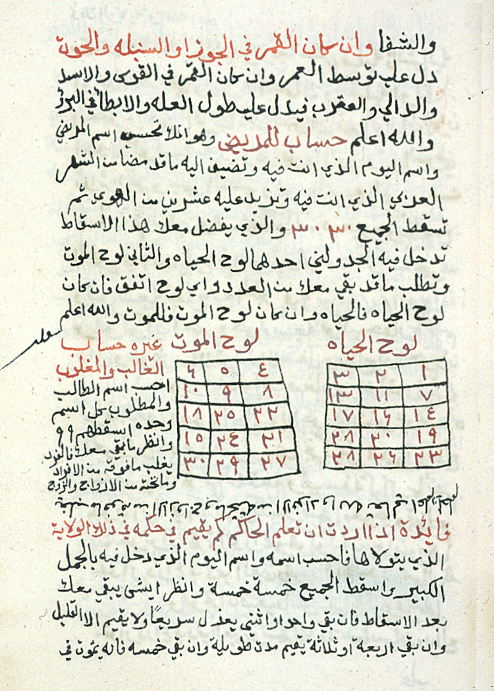
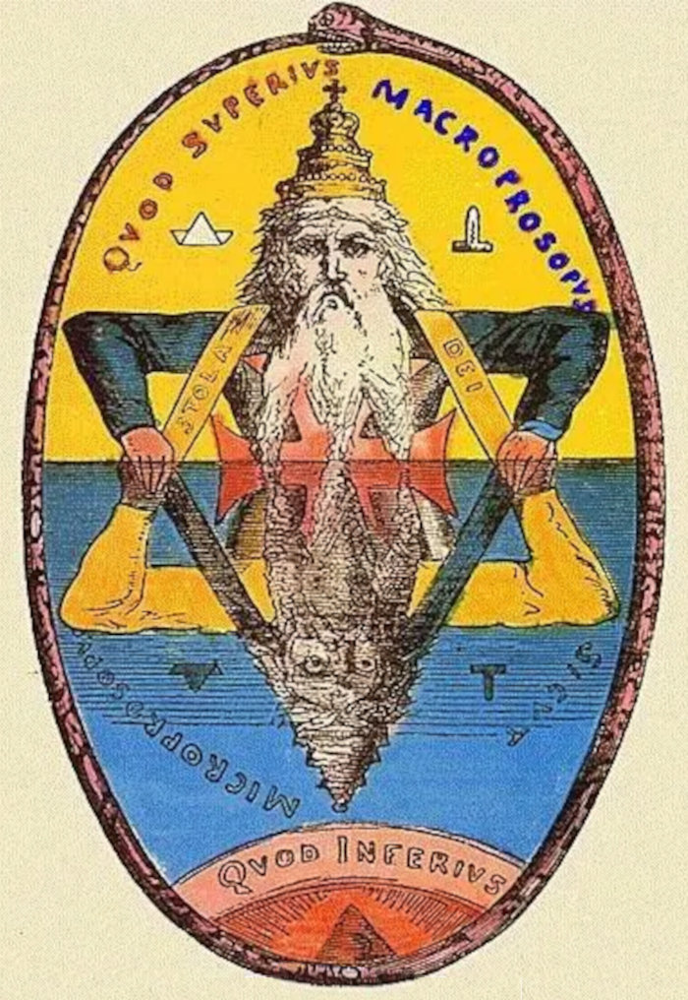
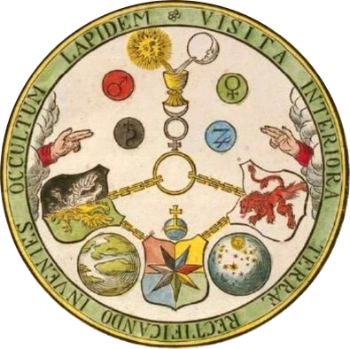
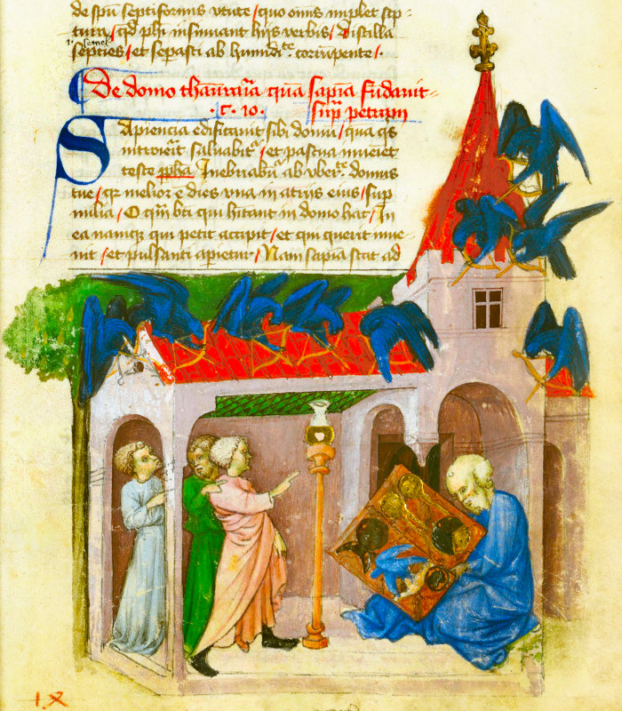

The Emerald Tablet of Hermes Trismegistus
The Emerald Tablet of Hermes Trismegistus
As legend has it, a cornerstone of hermetic wisdom is embodied in an emerald stone tablet covered with inscriptions outlining details of the highest held principles of Hermetism and especially alchemy. At the beginning of the twelfth century, The earliest known text of the Emerald Tablet to appear in Europe was a Latin translation of an Arabic manuscript within a work entitled Liber de secretis naturae. The text made little impact on the intellectual world at the time. In 1140, another version appeared within the work Secretum Secretorum from Johannes Hispalensis but this time it became one of the most famous and celebrated manuscripts of the middle ages. The text from which that translation was made was an Arabic copy from the year 825, the original authorship being attributed to the Greek mystic Apollonios von Tyana.

In 1923, E. J. Holmyard discovered an older Arabic version of the text in the Kitāb al-Uṣṭuḳuss al-t̲h̲ānī of Ḏj̲ābir b. Ḥaiyān. Julius Ruska revealed that the original source of that document is to be found at the end of the Sirr al-k̲h̲alīka, composed by Hermes, and said to have been found by Balīnās (Apollonius of Tyana) in the tomb of Hermes. This threw light on many points of the history of the Tabula Smaragdina from the time of Hugo Santelliensis to the present day. He was also able to show that Ḏj̲ābir b. Ḥaiyān already was acquainted with the book of Apollonius, so that it is fairly certain that the work originated in Gnostic circles.
A page from The Secret of Secrets (Kitâb Sirr al-asrâr)
According to Garth Fowden in The Egyptian Hermes, astrology, which formed as the syncretism of Greek, Mesopotamian and Egyptian knowledge of the Cosmos, predates the Philosophical Hermetic texts. This makes sense because the Cosmology of Hermetism is woven out of concepts regarding the nature of planets and elements. This would also mean that the Technical Hermeticum also predates the Philosophical. This is corroborated by the dating of these texts in modern times. Therefore the likelihood that at the basis of alchemy, is also astrology. When it comes to dealing with the Emerald Tablet, the concepts are indeed astrological, even though claimed centuries later to be alchemical.
Bearing that in mind and viewing the Emerald Tablet from an astrological point of view, a very obvious explanation of what the text means is not so difficult. What is being described here is the basis of astrology, namely what astrology is and does. Fundamental is the course of the Sun through the sky above and below the horizon. This course, or Logos in Greek, is known as the ecliptic.

The dictum As Above, So Below has captured the imagination of many for centuries.

From the late 16th century onwards, the Emerald Tablet is often accompanied by a symbolic figure called the Tabula Smaragdina Hermetis

15th century depiction in The Aurora Consurgens of the discovery of the Emerald Tablet
THE EMERALD TABLET OF HERMES TRISMEGISTUS
1. I speak not fiction, but what is certain and most true.
Hermetic Logos is word, is truth.2. What is below is like that which is above,
and that which is above is like that which is below
for performing the miracle of one thing.
Half of he ecliptic is always above the horizon and the other half is under.Everything is astrologically generated from the ecliptic.
3. And as all things are produced from one, by the mediation of one,
so all things are produced from this one thing by adaptation.
Since the planets are on the ecliptic, the planetary forces emanate from there.
4. Its father is the sun, its mother was the moon,
the wind carried it in its belly, its nurse is the earth.
The Sun's path forms the eliptic. The Moon is there too. The wind here describes the upper atmosphere and
the earth is where manifestations are nurtured.
5. It is the cause of all perfection throughout the whole world.
Hermetic notion of Creation brought about by planetary influences.6. Its power is perfect if it be changed into the earth.
i.e. when brought into being.7. Separate the earth from the fire, the subtle from the gross,
gently, and with judgment.
Hermetic again, whereby fire rises up and away from the earth and what is left is the manifestation.
8. It ascends from the earth to heaven, and descends
again to earth, thus you will possess the glory of the whole world
and all obscurity will fly away.
The ecliptic starts at the eastern horizon, at the degree of the ascendant, rises up into the sky, then falls back to the western horizon,
before going beneath the horizon but it is not obcure
because the astrologer knows where the lower realm is.
9. This thing is the fortitude of all fortitude,
because it overcomes all subtle things,
and penetrates every solid thing.
Reference to the astrological effects.
10. Thus are all things created.
Hermetic cosmology again.11. Thence proceed wonderful adaptations
which are produced in this way.
All astrological moments have their own character.
12. Therefore am I called Hermes Trismegistus,
possessing the three parts of the philosophy of the whole world.
Possible reference to Greek, Mesopotamian and Egyptian celestial wisdoms.
13. What I had to say about the operations of the sun is complete.
The course and effect of the sun's path complete the circle.About
Hi, my name is Rod Schneider and I have created this website to illustrate how, with the help of astrology, that negativity can be converted into something more positive. The astrology being shown here is rooted in the most ancient inceptions derived from Hermetism. It is technical but in the hands of a practioner already familiar with astrology has great potential to be helpful. There is also much help for non-astrologers to use astrology in a different manner, namely with cycles and phases.Comments and contributions are always welcome.
Contact: rodschneider35@gmail.com